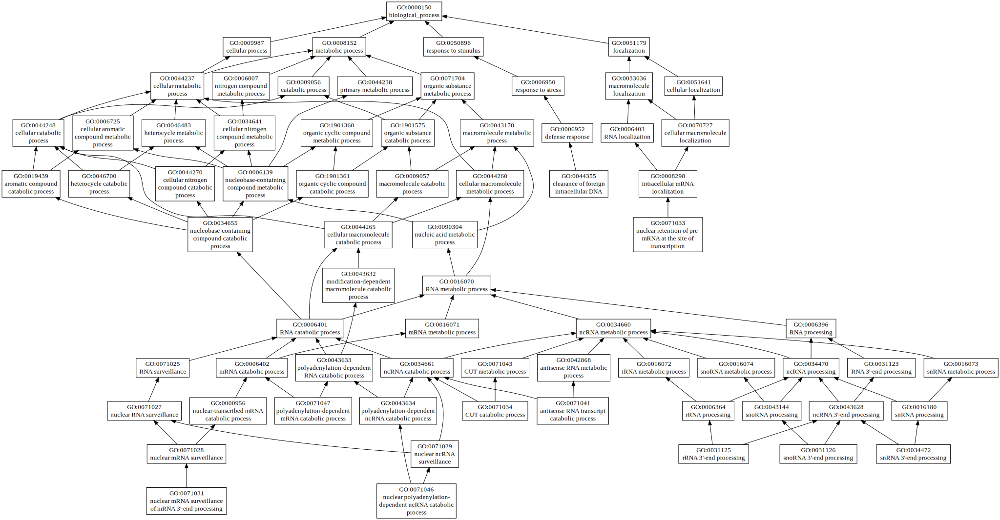
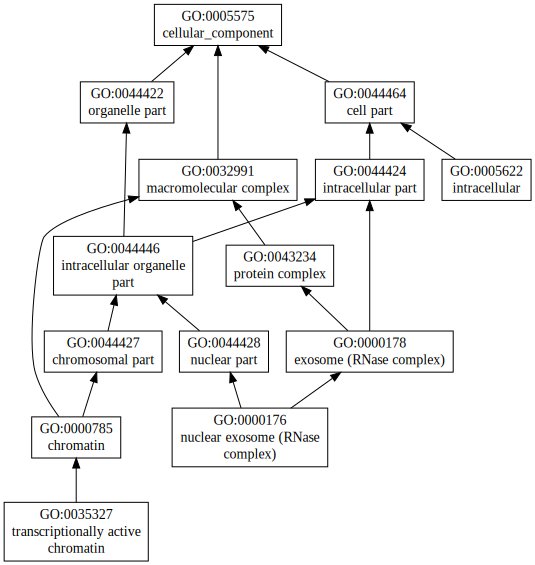

|
| GO term | CscoreGO | Name |
| GO:1901265 | 0.02 | nucleoside phosphate binding |
| GO:0036094 | 0.02 | small molecule binding |
| GO:0016888 | 0.02 | endodeoxyribonuclease activity, producing 5'-phosphomonoesters |
| GO:0015666 | 0.02 | restriction endodeoxyribonuclease activity |
| GO:0016896 | 0.01 | exoribonuclease activity, producing 5'-phosphomonoesters |
| Download full result of the above consensus prediction. |
| Click the graph to show a high resolution version. |
| (a) | CscoreGO is the confidence score of predicted GO terms. CscoreGO values range in between [0-1]; where a higher value indicates a better confidence in predicting the function using the template. |
| (b) | The graph shows the predicted terms within the Gene Ontology hierachy for Molecular Function. Confidently predicted terms are color coded by CscoreGO: |
| | [0.13,0.5) | [0.5,0.6) | [0.6,0.7) | [0.7,0.8) | [0.8,0.9) | [0.9,1.0] |
|
|
|

|
| GO term | CscoreGO | Name |
| GO:0071047 | 0.02 | polyadenylation-dependent mRNA catabolic process |
| GO:0071046 | 0.02 | nuclear polyadenylation-dependent ncRNA catabolic process |
| GO:0071041 | 0.02 | antisense RNA transcript catabolic process |
| GO:0071034 | 0.02 | CUT catabolic process |
| GO:0071033 | 0.02 | nuclear retention of pre-mRNA at the site of transcription |
| GO:0071031 | 0.02 | nuclear mRNA surveillance of mRNA 3'-end processing |
| GO:0044355 | 0.02 | clearance of foreign intracellular DNA |
| GO:0034472 | 0.02 | snRNA 3'-end processing |
| GO:0031126 | 0.02 | snoRNA 3'-end processing |
| GO:0031125 | 0.02 | rRNA 3'-end processing |
| Download full result of the above consensus prediction. |
| Click the graph to show a high resolution version. |
| (a) | CscoreGO is the confidence score of predicted GO terms. CscoreGO values range in between [0-1]; where a higher value indicates a better confidence in predicting the function using the template. |
| (b) | The graph shows the predicted terms within the Gene Ontology hierachy for Biological Process. Confidently predicted terms are color coded by CscoreGO: |
| | [0.08,0.5) | [0.5,0.6) | [0.6,0.7) | [0.7,0.8) | [0.8,0.9) | [0.9,1.0] |
|
|
|

|
| Download full result of the above consensus prediction. |
| Click the graph to show a high resolution version. |
| (a) | CscoreGO is the confidence score of predicted GO terms. CscoreGO values range in between [0-1]; where a higher value indicates a better confidence in predicting the function using the template. |
| (b) | The graph shows the predicted terms within the Gene Ontology hierachy for Cellular Component. Confidently predicted terms are color coded by CscoreGO: |
| | [0.14,0.5) | [0.5,0.6) | [0.6,0.7) | [0.7,0.8) | [0.8,0.9) | [0.9,1.0] |
|
|
|